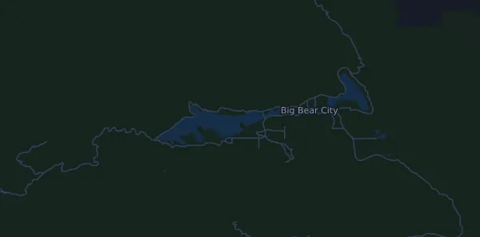

Kodiak Ultra Marathons by UTMB – 100M 161 km
- Distance
- 160,9 km
- Dénivelé positif
- ↑ 4 783 m
- Point culminant
- 3 033 m d’altitude
- Terrain
- Trail et sentiers
- Profil
- Vallonné
- Ravitaillements
- 14
Profil d’altitude
Prépare-toi avec Mila
Mila est une app avec un coach de course à pied. Ajoute une course à ton plan : le coach planifie tes semaines jusqu’au départ selon ta forme, et te donne un pronostic de temps et un plan pour l’allure, l’hydratation et l’énergie sur le parcours.

La bonne séance. Le bon jour.
Le parcours

À propos du parcours
HOKA Kodiak Ultra Marathons by UTMB – 100M est un trail de 160,9 km (Big Bear Lake, États-Unis). Le parcours compte 4 783 m de dénivelé positif et 4 762 m de dénivelé négatif, soit 30 m par km : il est donc vallonné. Le point culminant est à 3 033 m d’altitude et le point le plus bas à 1 665 m.
La plus grande montée commence au km 109,6 : 862 m de dénivelé sur 8,7 km, à 9,9 % de moyenne, jusqu’à 2 977 m d’altitude. Au total, le parcours compte 31 montées d’au moins 25 m ; la dernière commence au km 150,2.
L’organisateur prévoit 14 ravitaillements, le premier au km 13,5 et le dernier au km 153,7.
Dans l’app Mila, le coach décrit le parcours en détail dans ta langue et planifie ton allure et ton ravitaillement.
Montées
| Début | Longueur | Dénivelé | Pente | Sommet (m d’altitude) |
|---|---|---|---|---|
| km 0,9 | 2 km | 157 m | 7,9 % | 2 224 |
| km 2,9 | 1,8 km | 63 m | 3,5 % | 2 286 |
| km 12,5 | 960 m | 39 m | 4,1 % | 1 844 |
| km 16,8 | 7,2 km | 304 m | 4,2 % | 1 975 |
| km 25,1 | 1,4 km | 40 m | 2,9 % | 1 997 |
| km 26,6 | 8,3 km | 407 m | 4,9 % | 2 395 |
| km 38,8 | 1,6 km | 63 m | 3,9 % | 2 363 |
| km 43,1 | 3,3 km | 128 m | 3,9 % | 2 344 |
| km 46,8 | 1,8 km | 42 m | 2,3 % | 2 376 |
| km 57,2 | 740 m | 37 m | 5,1 % | 2 125 |
| km 58,7 | 2,6 km | 87 m | 3,4 % | 2 157 |
| km 66,9 | 2,9 km | 135 m | 4,7 % | 2 095 |
| km 76,9 | 3,9 km | 82 m | 2,1 % | 1 876 |
| km 83,0 | 750 m | 77 m | 10,2 % | 1 905 |
| km 83,8 | 840 m | 44 m | 5,3 % | 1 944 |
| km 84,7 | 3 km | 276 m | 9,1 % | 2 207 |
| km 92,1 | 740 m | 37 m | 5,0 % | 2 125 |
| km 93,6 | 2,6 km | 87 m | 3,4 % | 2 157 |
| km 98,6 | 1,9 km | 77 m | 4,0 % | 2 149 |
| km 100,7 | 1,7 km | 27 m | 1,5 % | 2 174 |
| km 103,2 | 1,4 km | 187 m | 13,7 % | 2 315 |
| km 106,3 | 640 m | 31 m | 4,8 % | 2 277 |
| km 109,6 | 8,7 km | 862 m | 9,9 % | 2 977 |
| km 118,9 | 1,1 km | 97 m | 8,5 % | 3 033 |
| km 120,9 | 870 m | 45 m | 5,2 % | 2 977 |
| km 133,5 | 1,6 km | 54 m | 3,5 % | 2 274 |
| km 135,8 | 2,1 km | 53 m | 2,5 % | 2 301 |
| km 140,3 | 1,2 km | 67 m | 5,4 % | 2 241 |
| km 142,1 | 420 m | 26 m | 6,3 % | 2 249 |
| km 143,3 | 2,5 km | 157 m | 6,2 % | 2 335 |
Avant le départ
Ravitaillements
| Au | Ce qu’on y trouve |
|---|---|
| km 13,5 | non précisé |
| km 31,2 | non précisé |
| km 43,1 | non précisé |
| km 54,2 | non précisé |
| km 63,9 | non précisé |
| km 76,4 | non précisé |
| km 82,7 | non précisé |
| km 89,2 | non précisé |
| km 99,0 | non précisé |
| km 111,5 | non précisé |
| km 125,7 | non précisé |
| km 133,6 | non précisé |
| km 143,6 | non précisé |
| km 153,7 | non précisé |
Source : kodiak.utmb.world, consulté le 15 octobre 2026
Questions fréquentes
Quand a lieu Kodiak Ultra Marathons by UTMB – 100M 161 km ?
La date de la prochaine édition n’est pas encore fixée. La dernière édition a eu lieu le 9 octobre 2026.
Kodiak Ultra Marathons by UTMB – 100M 161 km : quelle distance et quel dénivelé ?
La course fait 160,9 km, avec 4 783 m de dénivelé positif et 4 762 m de dénivelé négatif. Le point culminant est à 3 033 m d’altitude.
Kodiak Ultra Marathons by UTMB – 100M 161 km : à quoi ressemble le parcours ?
Le parcours est vallonné, avec 30 m de dénivelé par km en moyenne. Il compte 31 montées d’au moins 25 m ; la plus grande commence au km 109,6 : 862 m sur 8,7 km. Il va du départ à une arrivée située ailleurs. On y court sur sentiers et en nature.
Kodiak Ultra Marathons by UTMB – 100M 161 km : y a-t-il des ravitaillements ?
Oui. L’organisateur prévoit 14 ravitaillements : km 13,5 ; km 31,2 ; km 43,1 ; km 54,2 ; km 63,9 ; km 76,4 ; km 82,7 ; km 89,2 ; km 99,0 ; km 111,5 ; km 125,7 ; km 133,6 ; km 143,6 ; km 153,7.
Kodiak Ultra Marathons by UTMB – 100M 161 km : comment gérer mon allure ?
Vise un effort régulier plutôt qu’une allure régulière : laisse l’allure baisser dans les montées, reprends-la quand le terrain s’aplanit, et retiens-toi sur les premiers kilomètres. Les plus grandes montées commencent au km 16,8, km 26,6, km 109,6 et km 150,2. Dans Mila, tu obtiens un plan d’allure pour ce parcours, adapté à ta forme.
D’autres courses de ce type
Autres courses à proximité
- Falmouth Road Race 11,3 km15 août 2027 · Woods Hole, Falmouth, États-Unis
- Badwater 135 217 km19 juillet 2027 · Badwater Basin, Death Valley, États-Unis
- Big Sur International Marathon 42,2 km25 avril 2027 · Big Sur, États-Unis
- Black Canyon Ultras 100K13 février 2027 · Mayer (Spring Valley), Arizona, États-Unis
- BOLDERBoulder 10K31 mai 2027 · Boulder, Colorado, États-Unis
- Boston Marathon 42,2 km19 avril 2027 · Hopkinton, États-Unis
Prépare-toi avec Mila
La bonne séance. Le bon jour.
Les informations proviennent du fichier du parcours et de l’organisateur. Vérifie la date, les heures de départ et le règlement auprès de l’organisateur.
Mila n’est ni affiliée à l’organisateur ou aux sponsors de la course, ni sponsorisée ou approuvée par eux. Les noms et les marques appartiennent à leurs propriétaires. Organisateur ou ayant droit ? Demander une modification ou un retrait